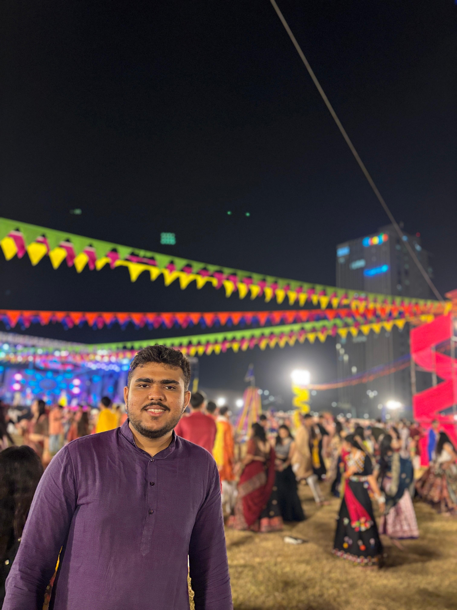

Electronics and Communication Engineer | Embedded Systems | IoT | Robotics
B.Tech in Electronics and Communication Engineering with a minor in IoT from Pandit Deendayal Energy University. Passionate about robotics, embedded systems, and automation.
Pandit Deendayal Energy University - B.Tech in Electronics and Communication Engineering
Sahana Systems Limited - Intern (IoT)
Satyakam Foundation - Volunteer Teacher
Winner of Smart India Hackathon 2024
Problem Statement: Rapid colorimetric and AI-based methods for determining the microbial quality of raw milk, processed milk, and milk products
Cricket Enthusiast - Active player in First-class cricket
Email: harshpatel4220@gmail.com
LinkedIn: Harsh Patel
Email Me